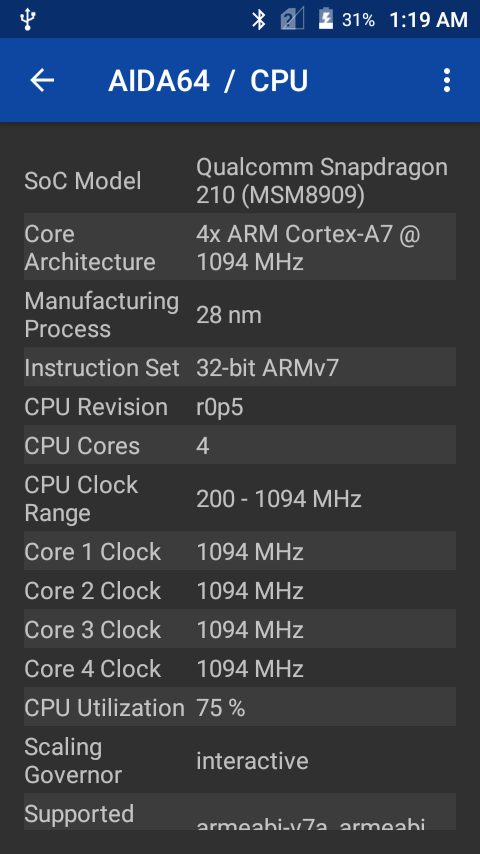
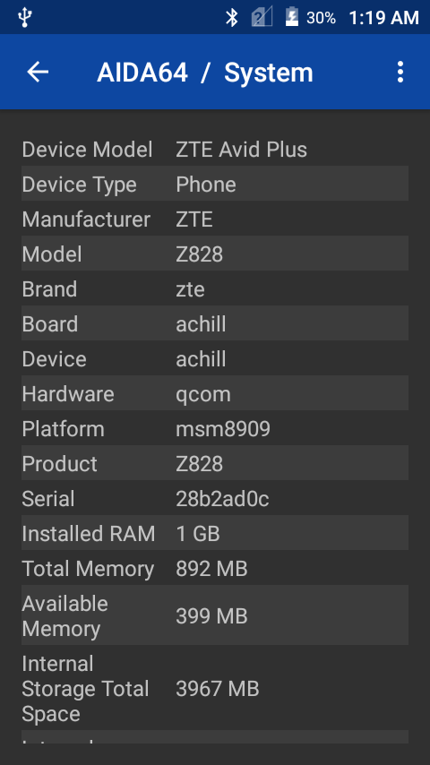
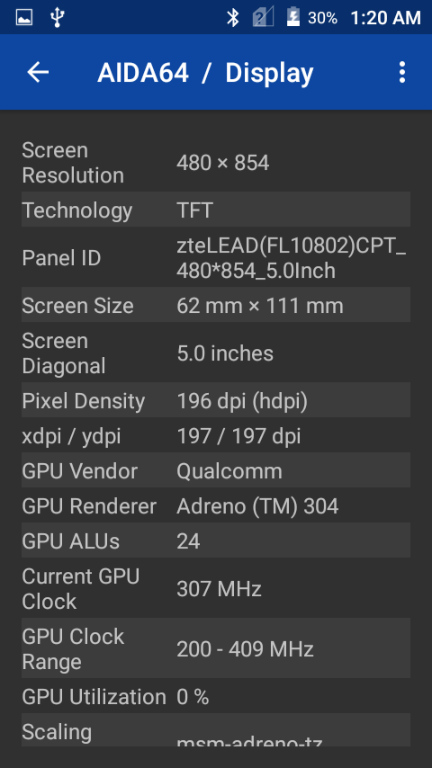
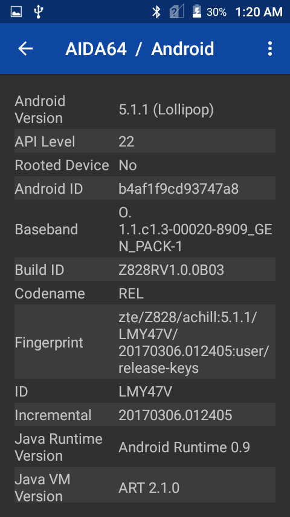
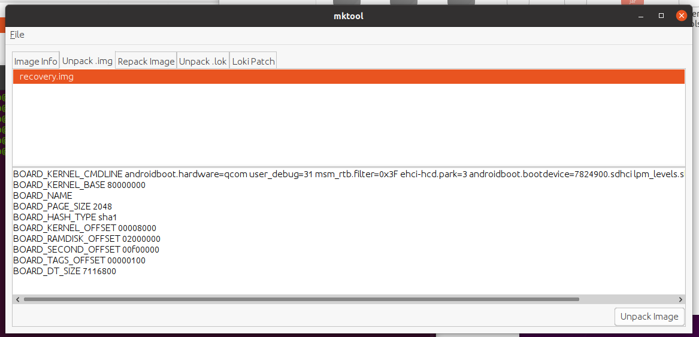

January 16th 2021

January 4th 2021

Alexenferman
Have you ever wanted to build a TWRP recovery for your device without porting, but you don't know how to create a basic device tree? Today I will show you how to create a basic device tree for your device allowing you to build a TWRP recovery image for your device. Keep in mind as a dislaimer that this is a basic device tree, and there is no guarantee TWRP will work the first time. You may need to add things from a similar device tree to fix bugs, errors, etc... Let's get started!
PREPARING TO BUILD A DEVICE TREE
What you will need
To begin creating a device tree for your device, you will need the following things:
- A bootloader unlocked Android device
- The stock recvoery from the phone you are building for. It can also be an older TWRP or CWM recovery compatible with the device.
- A Linux PC
- A Github or Gitlab account (optional)
- A notepad application
When creating a device tree, you may also use a Windows based computer. However, when building TWRP, you can only use a Linux PC or Virtual Machine.
Getting basic specifications of the device
To create a device tree, we must get some basic specifications. Download apps such as CPU-Z, AIDA64 or HWinfo to view the specs of your device and take a note of the following things:
- SoC Model - (Ex. Snapdragon 210)
- Architecture - (Ex. arm)
- Device Model - (Ex. ZTE Avid Plus)
- Manufacturer - (Ex. ZTE)
- Model - (Ex. Z828)
- Brand - (Ex. zte)
- Board/Codename - (Ex. achill)
- Platform - (Ex. msm8909)
   
Extracting the stock recovery image
To get more information about the device such as the Kernel CMDLINE, offsets and more, we must extract the stock boot image. You can use multiple tools to acomplish the same job, but I will be using mktool as it is open source and very easy to use.
Download the Binaries from the releases section
Extract the ZIP file somewhere in the /home/user folder.
Place the recovery.img in the "input" folder.
Using the terminal, navigate to the mktool folder and open the program using the java -jar mktool.jar command.
After that, go to the "Unpack" tab, select your boot image, and click on "Unpack Image"
Take a note of the output of the console at the bottom. You will need it later.
BOARD_KERNEL_CMDLINE androidboot.hardware=qcom user_debug=31 msm_rtb.filter=0x3F ehci-hcd.park=3 androidboot.bootdevice=7824900.sdhci lpm_levels.sleep_disabled=1 earlyprintk BOARD_KERNEL_BASE 80000000 BOARD_NAME BOARD_PAGE_SIZE 2048 BOARD_HASH_TYPE sha1 BOARD_KERNEL_OFFSET 00008000 BOARD_RAMDISK_OFFSET 02000000 BOARD_SECOND_OFFSET 00f00000 BOARD_TAGS_OFFSET 00000100 BOARD_DT_SIZE 7116800
Also, you will find the extracted files from the recovery image in the "/extracted" folder.
extracted
|
configs
| `-recovery.img-base
| recovery.img-board
| recovery.img-cmdline
| recovery.img-dt
| etc...
|
ramdisk
| `- init.rc
| ueventd.rc
| fstab.qcom
| default.prop
| etc...
|
recovery.img-zImage
CREATING THE DEVICE TREE
To create a device tree, you must create the following files:
Android.mk
Add the following lines to the Android.mk file.
LOCAL_PATH := $(call my-dir) ifeq ($(TARGET_DEVICE), #codename#) include $(call all-subdir-makefiles,$(LOCAL_PATH)) endif
Replace the #CODENAME# with the Board/Codename spec we noted previously. In my case, it's "achill".
AndroidProducts.mk
Add the following lines to the AndroidProducts.mk file.
PRODUCT_MAKEFILES := \
$(LOCAL_DIR)/omni_#CODENAME#.mk
Replace the #CODENAME# with the Board/Codename spec we noted previously. In my case, it's "achill", so omni_achill.mk
BoardConfig.mk
BoardConfig is more complicated to create. Follow the intructions carefully.
Add the following lines to the BoardConfig.mk file.
DEVICE_PATH := device/#Brand#/#Codename#
Replace the #CODENAME# with the Board/Codename and #Brand# with the Brand spec we noted previously. In my case, it's "device/zte/achill".
Next, add the following lines:
# For building with TWRP minimal manifest ALLOW_MISSING_DEPENDENCIES := true
# Architecture (arm) # Architecture (arm64) TARGET_ARCH := arm TARGET_ARCH := arm64 TARGET_ARCH_VARIANT := armv7-a-neon TARGET_ARCH_VARIANT := armv8-a TARGET_CPU_ABI := armeabi-v7a OR TARGET_CPU_ABI := arm64-v8a TARGET_CPU_ABI2 := armeabi TARGET_CPU_ABI2 := TARGET_CPU_VARIANT := generic TARGET_CPU_VARIANT := generic
Depending on your device architecture determined from the specs (arm or arm64), chose the correct one.
Next, add the following lines:
# Assert TARGET_OTA_ASSERT_DEVICE := #Codename#
Replace the #CODENAME# with the Board/Codename spec we noted previously. In my case, it's "achill", so "TARGET_OTA_ASSERT_DEVICE := achill"
Next, add the following lines:
# File systems BOARD_HAS_LARGE_FILESYSTEM := true BOARD_SYSTEMIMAGE_PARTITION_TYPE := ext4 BOARD_USERDATAIMAGE_FILE_SYSTEM_TYPE := ext4 TARGET_USERIMAGES_USE_EXT4 := true TARGET_USERIMAGES_USE_F2FS := true
NOTE: If you are building for a very old phone, it may not be using EXT4 for its partitions.
# Kernel BOARD_KERNEL_CMDLINE := #Cmdline#
Enter the kernel cmdline we found after extracting the Recovery Image. Go here to see its value
Next, add the following line:
TARGET_PREBUILT_KERNEL := $(DEVICE_PATH)/prebuilt/#Image Type#
You will see a kernel file in the extracted folder. Remove the "recovery.img-" string from the filename and you should see a filename such as zImage, Image.gz or zImage-dtb. Replace the #Image Type# with the approrpriate Kernel filename.
TARGET_PREBUILT_DT := $(DEVICE_PATH)/prebuilt/dt.img
Only add this if there is a recovery.img-dt in the /extracted/configs folder.
Next, add the following lines:
BOARD_KERNEL_BASE := 0x80000000 BOARD_KERNEL_PAGESIZE := 2048 BOARD_RAMDISK_OFFSET := 0x02000000 BOARD_KERNEL_TAGS_OFFSET := 0x00000100
Enter the kernel base, pagesize, etc... we found after extracting the Recovery Image. Go here to see the values.
Next, add the following lines:
BOARD_FLASH_BLOCK_SIZE := 131072 # (BOARD_KERNEL_PAGESIZE * 64) BOARD_MKBOOTIMG_ARGS += --ramdisk_offset $(BOARD_RAMDISK_OFFSET) BOARD_MKBOOTIMG_ARGS += --tags_offset $(BOARD_KERNEL_TAGS_OFFSET)
BOARD_MKBOOTIMG_ARGS += --dt $(TARGET_PREBUILT_DT)
Only add the last line if there is a recovery.img-dt in the /extracted/configs folder.
Next, add the following lines:
# Platform TARGET_BOARD_PLATFORM := #Platform#
Replace the #Platform# with the Platform spec we noted previously. In my case, it's "msm8909", so "TARGET_BOARD_PLATFORM := msm8909".
Next, add the following lines:
# Hack: prevent anti rollback PLATFORM_SECURITY_PATCH := 2099-12-31 PLATFORM_VERSION := 16.1.0
These lines will set the Security patch of the recovery to 2099, so the stock ROM will not overwrite the custom recovery with the stock one.
Next, add the default TWRP flags. You may refer to this documentation if you wish or need to add more TWRP Flags. Using TWRP flags, you can add or remove features in TWRP such as extra languages, horizontal screen, themes etc...
# TWRP Configuration TW_THEME := portrait_hdpi TW_EXTRA_LANGUAGES := true #Only if you need it TW_SCREEN_BLANK_ON_BOOT := true TW_INPUT_BLACKLIST := "hbtp_vm"
device.mk
Add the following lines to the device.mk file.
LOCAL_PATH := device/#Brand#/#Codename#
Replace the #CODENAME# with the Board/Codename and #Brand# with the Brand spec we noted previously. In my case, it's "device/zte/achill".
omni_#Codename#.mk
Replace the #CODENAME# with the Board/Codename spec we noted previously. In my case, it's "achill", so omni_achill.mk
Add the following lines to the omni_#Codename#.mk file.
# Inherit from those products. Most specific first. $(call inherit-product-if-exists, $(SRC_TARGET_DIR)/product/embedded.mk) $(call inherit-product, $(SRC_TARGET_DIR)/product/full_base_telephony.mk) $(call inherit-product, $(SRC_TARGET_DIR)/product/languages_full.mk) # Inherit from device $(call inherit-product, device/#Brand#/#Codename#/device.mk) # Inherit some common Omni stuff. $(call inherit-product, vendor/omni/config/common.mk) $(call inherit-product, vendor/omni/config/gsm.mk) # Device identifier. This must come after all inclusions PRODUCT_DEVICE := #Codename# PRODUCT_NAME := omni_#Codename# PRODUCT_BRAND := #Brand# PRODUCT_MODEL := #Model# PRODUCT_MANUFACTURER := #Brand# PRODUCT_RELEASE_NAME := #Brand# #Model#
Replace the #CODENAME# with the Board/Codename, #Brand# with the Brand and #Model# with the Model spec we noted previously. In my case, it's achill, zte and Z828.
vendorsetup.sh
Add the following lines to the vendorsetup.sh file.
add_lunch_combo omni_#Codename#-userdebug add_lunch_combo omni_#Codename#-eng
Replace the #CODENAME# with the Board/Codename spec we noted previously. In my case, it's achill.
recovery.fstab
Go to your extracted recovery image.
Navigate to /ramdisk/etc
You should see a file called "recovery.fstab"
This is mine:
/dev/block/bootdevice/by-name/sbl1 /sbl1 emmc /dev/block/bootdevice/by-name/rpm /rpm emmc /dev/block/bootdevice/by-name/tz /tz emmc /dev/block/bootdevice/by-name/persist /persist ext4 /dev/block/bootdevice/by-name/aboot /emmcboot emmc /dev/block/bootdevice/by-name/modem /modem emmc /dev/block/bootdevice/by-name/config /persistent emmc /dev/block/bootdevice/by-name/echarge /echarge emmc /dev/block/bootdevice/by-name/splash /splash emmc /dev/block/bootdevice/by-name/carrier /carrier ext4 /dev/block/bootdevice/by-name/system /system ext4 /dev/block/bootdevice/by-name/cache /cache ext4 /dev/block/bootdevice/by-name/userdata /data ext4 /dev/block/mmcblk1p1 /sdcard vfat /dev/block/bootdevice/by-name/boot /boot emmc /dev/block/bootdevice/by-name/recovery /recovery emmc /dev/block/bootdevice/by-name/misc /misc emmc
Remove any partitions you don't want to touch, such as /emmcboot, /sbl1, /tz, then change the order (if necessary) of the coloumns. It should look similar to this:
# mount point fstype device flags /persist ext4 /dev/block/bootdevice/by-name/persist flags=display="Persist" /persist_image emmc /dev/block/bootdevice/by-name/persist flags=display="Persist image";backup=1;flashimg=1 /system ext4 /dev/block/bootdevice/by-name/system flags=backup=1 /system_image emmc /dev/block/bootdevice/by-name/system flags=display="System image";backup=1;flashimg=1 /cache ext4 /dev/block/bootdevice/by-name/cache /data ext4 /dev/block/bootdevice/by-name/userdata /boot emmc /dev/block/bootdevice/by-name/boot /recovery emmc /dev/block/bootdevice/by-name/recovery flags=backup=1 /sdcard vfat /dev/block/mmcblk1p1 /misc emmc /dev/block/bootdevice/by-name/misc
Replace the #CODENAME# with the Board/Codename spec we noted previously. In my case, it's achill.
prebuilt folder
Create a folder called "prebuilt".
Go to your extracted recovery image. You will see a file named: "recovery.img-zImage" or "recovery.img-image.gz-dtb" or "recovery.img-zImage-dtb".
Rename the file, and remove the "recovery.img-" prefix from the filename. The end result should look like this: "zImage", "image.gz-dtb" or "zImage-dtb".
Copy the newly renamed file to the prebuilt folder.
device tree
|
Android.mk
AndroidProducts.mk
BoardConfig.mk
device.mk
etc...
|
prebuilt
`- zImage
dt.img //ONLY IF THE KERNEL NAME IS "zImage"
NOTE: If the Kernel name is "zImage", you should copy the file called "recovery.img-dt" found in the /configs folder in your extracted recovery to the /prebuilt folder of the device tree. Rename it to "dt.img".
recovery/root folder
Create a folder called "recovery".
Inside the recovery folder, create another folder called "root"
Copy all the files (Not folders!) from the /ramdisk folder of extracted recovery to the recovery / root folder of the device tree.
Be careful, as you have to remove some of the files. There is no one answer to this question, as it is always different from device to device. However, I have put this list of which files should you keep or remove from the recovery/root folder. Use your judgment to see which files you should add or not add.
device tree
|
Android.mk
etc...
|
recovery
`-root SHOULD YOU ADD IT?
`-init NO
init.qcom.usb.sh YES
sepolicy NO
init.class_main.sh YES
init.rc YES
service_contexts NO
default.prop YES
property_contexts NO
file_contexts NO
init.qcom.early.sh YES
ueventd.qcom.rc YES
fstab.qcom YES
init.qcom.sh YES
seapp_contexts NO
ueventd.rc YES
init.qcom.fixup.sh YES
selinux_version NO
verity_key NO
And there you go! You have created your very own TWRP device tree!
Unfortunately, there is not a 100% guarantee that this device tree will create a functionnal TWRP image, so we recommend searching on Github for a device similar to yours (Same Chipset) and compare the contents of it to see if you missed anything.
For older MTK devices, you might need a custom mkbootimg which you will find in a similar device tree, if required.
See the final result of the device tree I created here.
You are done!
If you have any questions, or need help creating your device tree, leave a comment below!
COMMENTS